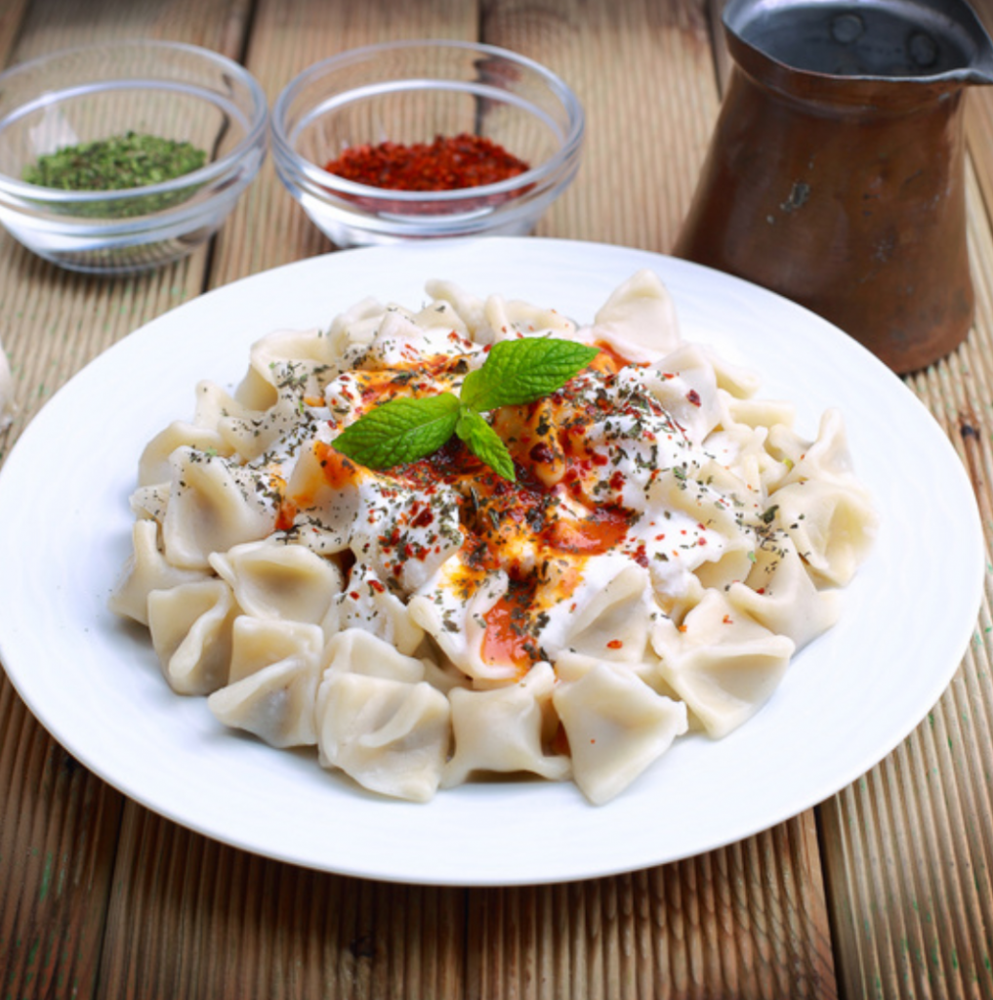

Türkische Manti

Zutaten für
3
Tassen Mehl
1
Ei
1
Teelöffel Salz
1
Tasse Wasser
250 g
Hackfleisch
1
kleine Zwiebel
1
Teelöfel Salz
1
Tassen Naturjoghurt
1
Knoblauchzehen
2
Esslöffel Butter
1
Teelöffel Tomatenmark
Zubereitung
Manti sind traditionelle türkische Teigtaschen mit Fleischfüllung. Aus Mehl, Ei, Salz und Wasser wird ein fester Teig zubereitet und dünn ausgerollt. Für die Füllung werden Hackfleisch, Zwiebel, Salz und Pfeffer gemischt. Der Teig wird in kleine Quadrate geschnitten, mit der Füllung versehen und zu kleinen Päckchen geformt. Die Manti werden in Salzwasser gekocht und anschließend mit Knoblauchjoghurt und heißer Buttersoße serviert – verfeinert mit Minze oder Paprikaflocken.
Rezept erstellt von
Serhat